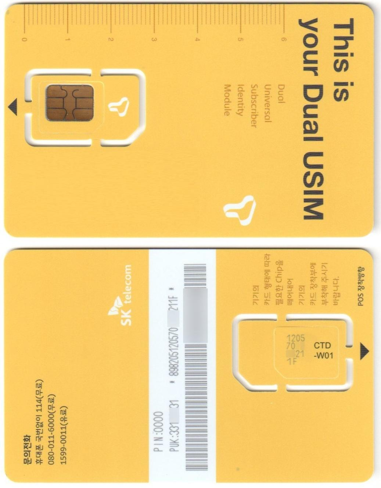

유심 해킹으로 난리? 유심이 뭐길래?
개인적으로 SKT를 쓰고 있지 않아서 최근 생긴 SKT의 유심 정보 유출 사태에 대해 둔감하게 생각하고 있었다. 하지만 이 유심 해킹으로 유심 정보가 유출되면 발생할 수 있는 일이 심상치 않음을 느끼게 되었다. 무엇보다 가족 중에 SKT 가입자가 있었기에 그냥 넘길 수도 없는 일이다. 그래서 이 유심에 관한 것을 정리해 보는 게 대처법을 알 수도 있을 것 같아 기록을 남겨보려고 한다.
유심(USIM) - univalsal subscriber identity module
 SKT의 마이크로 유심 (Movienever / Wikipedia)
유심(USIM)은 휴대폰(스마트폰)과 통신사 사이의 가입자 정보를 인증하는 작은 칩을 의미한다. 쉽게 말해서 특정 통신사에 가입했다면 이 통신사에 가입했다는 정보가 기록된 작은 칩을 휴대폰에 넣으면 휴대폰을 사용할 수 있는데 여기서 작은 칩이 유심이다. 위 사진에서 카드처럼 보인 것 안에도 작게 칼집이 나있어서 뜯어낼 수 있게 생긴 부분이 자주 볼 수 있는 마이크로 칩 타입의 실제 유심이다.
이 유심에 기록되는 정보는 표준화된 스펙이 있으며 대충 아래와 같은 내용들이 기록된다.
- 가입자 식별 정보: 개인에게 고유하게 부여되는 국제 규격의 가입자 식별 번호다.
- 통신사 정보: 어떤 통신사를 쓸 수 있는지에 관한 정보다.
- 개인 식별 번호: 대충 유심 암호화 키로 설명할 수 있을 것 같다.
- 부가 서비스 정보: 로밍이나 NFC 등 추가적으로 이용하는 서비스 관련 정보를 저장다.
- 전화번호부: 말 그대로 이름이나 연락처 같은 전화번호부를 저장할 수도 있다. 과거에는 유심만 갈아끼우면 연락처 정보를 그대로 옮길 수 있는 수단 중 하나였다. 물론 지금은 휴대폰에 바로 저장되고 클라우드로 유지보수 되는 형태가 일반적이라 안 쓰이는 추세다.
뭔가 다양한 정보가 기록되어 있지만 여기서 핵심적인 것은 '가입자 식별 정보'와 '통신사 정보'다. 즉 유심에는 '어떤 통신사에 가입한 누구'에 관한 정보가 기록되어 있다. 휴대폰을 새로 개통하거나 번호 이동을 하게 되면 새 유심으로 갈아 끼우는 이유가 바로 여기에 있다.
유심이 해킹되면 어떻게 될까?
정확히 말해서 이번 SKT 사태는 유심 해킹이 아닌 유심 정보의 유출로 설명해야 한다. 유심을 해킹하려면 개인 스마트폰을 통해 유심 정보를 읽어야 하는데 휴대폰에서 유심을 직접 빼서 읽어야 하며 원격으론 불가능에 가까운 일이기 때문이다.
그렇다면 주제 제목을 약간 바꿔서, 만약 유심 정보가 유출되면 어떻게 될까?
앞서 유심에는 '어떤 통신사에 가입한 누구'라는 정보가 기록되어 있다고 했다. 그렇다면 이 정보를 이용하면 휴대폰을 복제할 수 있게 된다. 즉 신분증만 잘 복제한다면 해당 명의로 다른 휴대폰이 개통될 수 있는데 이렇게 개통된 휴대폰을 통신사에서 보면 완전히 같은 걸로 인식된다는 말이다.
결과적으로 유출된 유심 정보를 복제 유심을 만들어서 새로운 폰을 개통할 수 있으며 이를 이용해 다양한 명의 도용이나 사기가 발생할 수 있다.
즉 남이 당신인 척 할 수 있게 된다는 말이다.
가장 직접적으로는 유심 정보를 기반으로 인증하는 하는 경우다. 이런 경우는 주로 써드파티 서비스가 아닌 통신사의 자체 서비스 정도로 한정하면 될 것 같지만 확실한 건 아니다.
그 다음으로는 역시나 전화번호의 복제가 문제다. 이 경우 SMS 메시지를 가로챌 수 있으며 이를 통해 'SMS 본인 인증'을 이용하게 되는 모든 서비스에서 명의가 도용될 수 있다. 그리고 SMS를 OTP 용도로 사용하는 서비스의 계정 해킹에도 악용될 수 있다.
전화번호의 복제는 SMS를 훔쳐보는 것에서 끝나지 않고 당연히 통화도 가로챌 수 있다. 그리고 같은 전화번호를 가지는 다른 폰이 존재한다면 그 폰은 대포폰으로써 범죄에 악용되기 마련이다. 대출을 받거나 지인에게 사기를 치거나 혹은 휴대폰 소액 결제 사기를 치는 데도 활용될 수 있다.
이렇게 유심 복제로 발생하는 다양한 공격이나 사기 등을 심스와핑(SIM swapping)이라고 한다.
통신사 입장에선 같은 번호의 폰이 두 개나 존재하게 되는 상황을 정상적이라고 판단하지는 않을 것이다. 당연하게 두 폰 중 하나의 사용을 제한하는 상황이 올 수도 있다. 문제는 어떤 폰이 원래 주인의 것인지 알 수가 없다는 점이다. 결과적으로 휴대폰 사용에 불편함이 발생할 가능성도 생각할 수 있다.
해외의 경우
국가에 따라 다르지만 요즘은 이심(eSIM) 채용이 활발해지는 추세다. 이심은 물리적 칩을 쓰는 게 아닌 전자적인 심 시스템으로, 필요하다면 카드를 갈아 끼울 필요 없이 바로 스마트폰 내의 심 정보를 교체할 수 있다. 따라서 이심을 사용하고 있었다면 이번 유출 사건과 같은 일이 발생해도 통신사 측에서는 큰 피해 없이 빠르게 대처가 가능했을 것이다.
추측이지만 국내 통신사들은 수익성을 이유로 아직도 별도 판매하는 물리적인 유심 체계를 고집하는 듯하다. 덕분에 제 발등을 찍게 된 것 같지만 말이다.
유심 정보가 유출되었다면 심스와핑으로 이어지기 전에 가급적 빠르게 유심을 교체하는 편이 좋다. 하지만 재고 부족으로 모든 가입자들의 유심을 교체하려면 최소 수개월은 걸릴 것 같다. SKT 측에서도 그 문제를 인정했고 이를 보완하기 위해 도용 방지 서비스를 내놨지만 원리나 신뢰성이 확인되지 않은 만큼 아직은 교체가 정답인 것 같다.
어쨌거나 그 사이에 부디 별 일이 없기만을 빌 뿐이다.